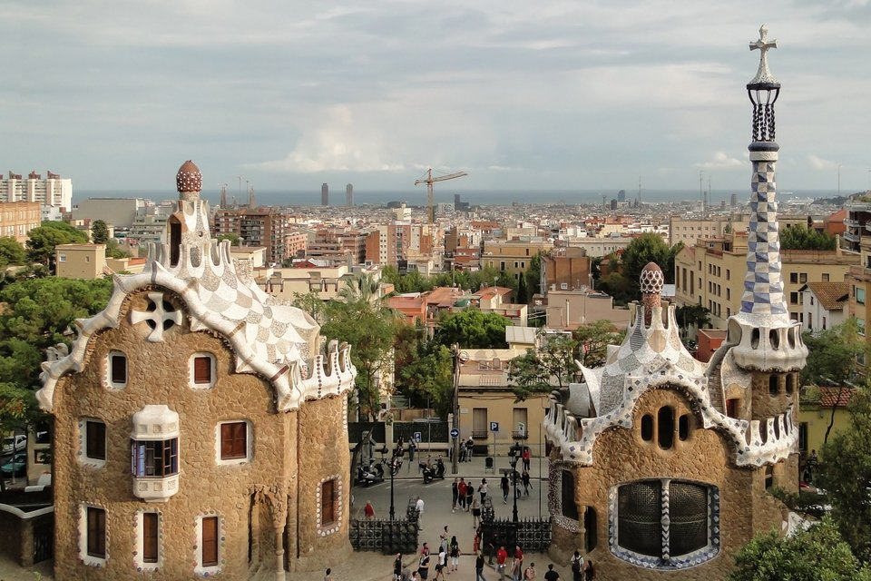

Spain · Barcelona
Park Güell audio guide
6 stops · 8 min · offline · plays as you arrive
The guide price is €2.99. This button is a placeholder. It does not open checkout and does not take payment. Email hello@getearwise.com.
See how a failed hillside garden-city development became Barcelona's most playful public park. Six stops trace Gaudí's trencadís tilework, viaducts, and the pink house where the architect lived for twenty years.
Stops
- 1
The Entrance Pavilions
Meet the pair of sugar-frosted gatehouses designed by Gaudí at the Carrer d'Olot entrance.
- 2
The Dragon Stairway
Climb past the mosaic salamander and Catalan coat of arms on the twin grand staircases.
- 3
The Hypostyle Room
Walk beneath eighty-six fluted Doric columns engineered to drain rainwater into an underground cistern.
- 4
Nature Square
Take in Barcelona's skyline from the winding ceramic-shard bench crowning the terrace.
- 5
The Washerwoman's Portico
Follow the sloped stone colonnade shaped like breaking waves along the hillside path.
- 6
The Gaudí House Museum
End outside the rose-pink villa where Antoni Gaudí lived from 1906 until shortly before his death.
On the map
All 6 stop pins for this guide are marked. Open map